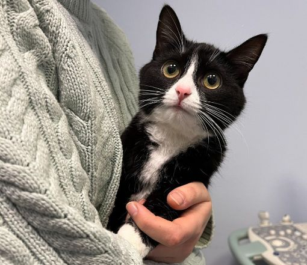

Чому ми не можемо віддати вашого вихованця відразу після операції?
Будь-яке оперативне втручання – це серйозна процедура, що проводиться під загальною анестезією. Загальна анестезія забезпечує сон, розслаблення м'язів (міорелаксацію) та знеболювання нашого пухнастого пацієнта. Для оцінки анестезіологічних ризиків проводиться передопераційне обстеження, яке складається з аналізів крові (загального та біохімічного).
Перед забором крові необхідно витримати голодну дієту (6-8-10 годин). Зрозуміло, існують екстрені операції, у яких чекати передопераційного обстеження ми можемо, проте аналізи крові сильно полегшують вибір післяопераційної тактики лікування.
Тяжкість оперативного втручання та час післяопераційної стабілізації залежить від екстреності, обсягу операції (невелика папілома або видалення селезінки) та її тривалості (від 15 хвилин до кількох годин). При планових операціях – кастрація, стерилізація, чищення зубів – ми віддаємо вихованцям, як тільки вони прокинуться, зможуть самостійно тримати тиск, температуру та адекватно оцінювати навколишній простір. Найчастіше при екстрених чи об'ємних операціях у ранньому післяопераційному періоді необхідне сильне знеболювання, внутрішньовенне введення лікарських препаратів та моніторинг життєво важливих показників. У таких випадках необхідно залишитись на кілька діб під нашим наглядом. На жаль, немає жодного достовірного передопераційного аналізу, який міг би запобігти виникненню індивідуальної алергічної реакції на той чи інший препарат. Вроджені вади серця та крові не завжди показують відхилення за показниками крові. Тому так важливо, щоб перший годинник після операції ваш вихованець знаходився під наглядом наших лікарів. У разі виникнення небажаних реакцій ми зможемо надати допомогу. Якщо щось подібне станеться вдома – результат непередбачуваний.
Якщо операція була короткою і мало травматичною, або вихованець дуже емоційно реагує на розлуку, то ми намагаємося не затримувати його в стаціонарі і якнайшвидше віддати Вам, бо точно знаємо: вдома краще. Однак переконатись, що пацієнт прокинувся, відновилися всі функції та рефлекси, ми зобов'язані.
Для зниження ризику ускладнень у тварин під час операцій і після кожної операції у нас стоїть анестезіолог-реаніматолог.
